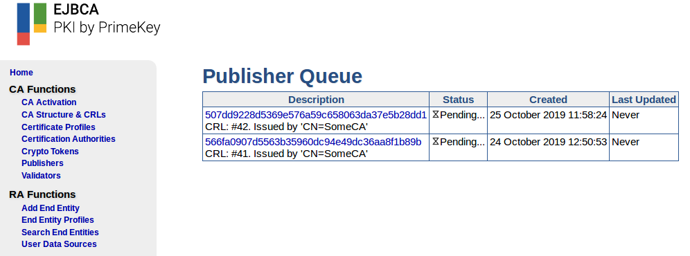

CA Operations Guide
This CA Operations Guide covers information on setting up Certification Authorities (CAs) and profiles and general configuration of the EJBCA instance.
For more information on RA Management tasks, see the RA Operations Guide. For Administrators responsible for configuring and maintaining EJBCA installations, see the EJBCA CA Concept Guide for information on EJBCA concepts and configuration.
Overview Page
The EJBCA CA Web allows you to quickly get an overview of your EJBCA installation. You can reach this page at any time by clicking Home on the menu. The information to be displayed can be configured under My Preferences.
Publisher Queue Status
The Publish Queue Status shows the current number of events stored in each publisher's publisher queue. Events can be stored in the publisher queue either because publishing failed, or because publishing goes to the queue directly.
To view more information about the items in a publisher queue, click on the number shown in the Length column.

CA Status
The CA health status overview indicates if CAs are offline and if CRLs are invalid, using the following columns:
CA Service: A red error indicates that the CA is not on-line or the CA token is not on-line. External CAs are always shown as ok. If the CA or CA token is not on-line, check the CA activation page to see if the CA can be activated.
CRL Status: A red error indicates that a CRL or delta CRL has expired without a new one being created. Note that delta CRLs are only monitored if used. For information on generating new CRLs, see CRL Generation.
Configuration Checker
The Configuration Checker scans your EJBCA installation for configuration errors and displays them as a list of tickets.
Managing CAs
A Certification Authority (CA) issues certificates to and vouches for the authenticity of entities. For information on managing CAs and instructions on how to create, renew, revoke, and import and export Certification Authority (CAs), see Managing CAs.
Managing CVC CAs
CVC CAs differ from the standard x509 CAs in some ways. The CVC Operations page covers these differences.
Crypto Tokens
In EJBCA, cryptographic keys are stored in a Crypto Token. A Crypto Token can either be stored in a database, known as a soft Keystore, or on a Hardware Security Module (HSM).
For information on managing crypto tokens, with instructions on how to create, edit, and activate crypto tokens, see Managing Crypto Tokens.
Certificate Profiles
A Certificate Profile defines the constraints of the certificate, for example, what keys it can use, and what the extensions will be. For information on how to create and edit Certificate Profiles, see Managing Certificate Profiles.
End Entity Profiles
End Entity Profiles allow narrowing down and automatically input some variables used in the certificate.
The End Entity Profile is used together with the Certificate Profile to create the certificates signed by the CA. The Certificate Profile defines the constraints of the certificate, for example what keys it can use and what the extensions will be, while the End Entity Profile defines the information in the certificate, for example country and organization.
For more information on importing and exporting End Entity Profiles and instructions for creating a Server End Entity Profile, see End Entity Profile Operations
OCSP Management
For information on managing an OCSP Responder, whether situated locally on the same machine as the CA or remotely on a VA, see OCSP Management.
Roles and Access Rules
For information on working with roles and access rules, see Roles and Access Rules Operations.
Complete List of CA Operations Guide Topics
The full list of operations guide topics are as follows: